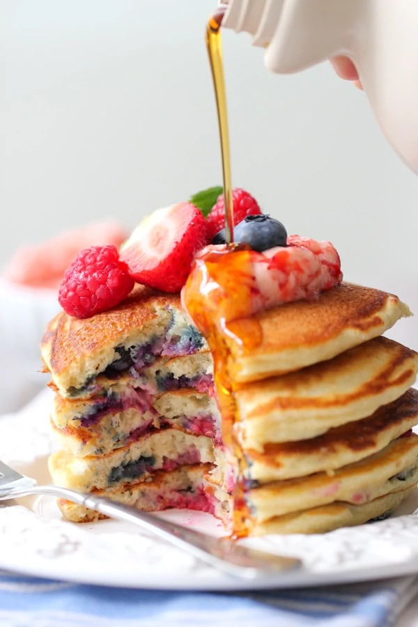

Pancake Recipe
Pancakes are a type of flatbread made from a simple batter of eggs, flour, milk, and baking powder. They are typically cooked on a griddle or skillet and are often served for breakfast with toppings such as maple syrup, fresh fruit, or whipped cream.
Ingredients:
- 1 cup all-purpose flour
- 2 tablespoons sugar
- 1 teaspoon baking powder
- 1/2 teaspoon baking soda
- 1/4 teaspoon salt
- 1 cup buttermilk
- 1/4 cup milk
- 1 large egg
- 2 tablespoons unsalted butter, melted
Instructions:
- In a large bowl, whisk together the flour, sugar, baking powder, baking soda, and salt.
- In a separate bowl, whisk together the buttermilk, milk, egg, and melted butter.
- Pour the wet ingredients into the dry ingredients and stir until just combined. Do not overmix.
- Heat a non-stick skillet or griddle over medium heat. Grease with butter or cooking spray.
- Using a 1/4 cup measuring cup, pour the batter onto the skillet. Cook until bubbles form on the surface, then flip and cook until golden brown.
- Repeat with the remaining batter.
- Serve the pancakes warm with your favorite toppings, such as maple syrup, fresh fruit, or whipped cream.